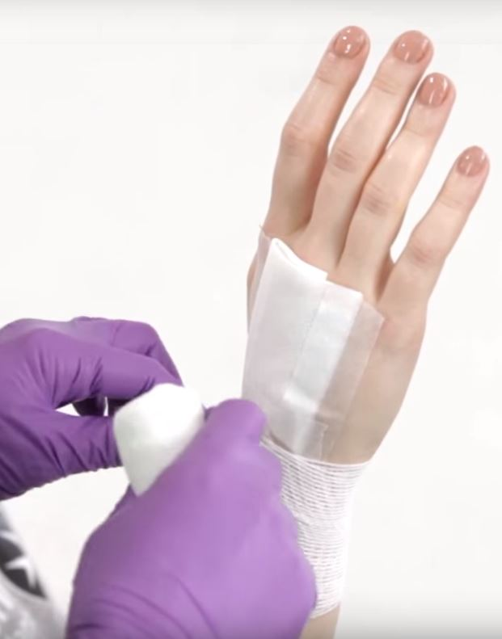
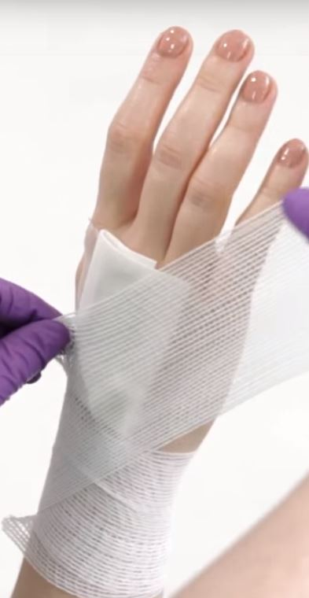
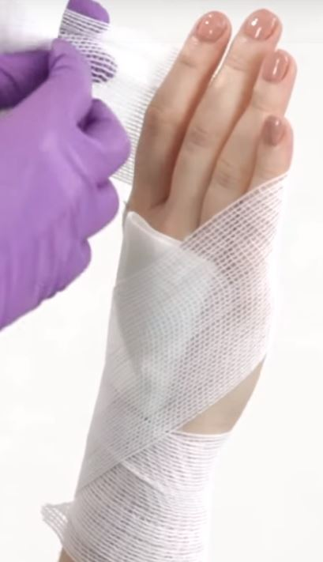
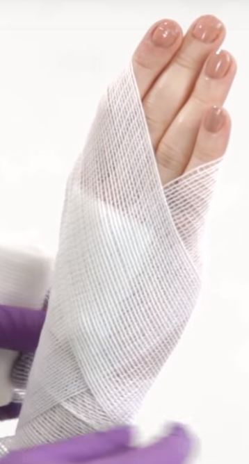

Bandage Wrapping
Follow the steps below to learn how to wrap a bandage around a hand!
1. Using a roller bandage, place the bandage on the inside of the wrist, just below the thumb.
2. Wrap the hand straight around the wrist twice.
3. Then, wrap the bandage across the back of their hand.
4. Wrap underneath their fingers.
5. Wrap diagonally across the back of their hand.
6. Repeat until hand is completely covered and use a pin or tape to keep the bandage in place.
7. Check tightness of bandage by squeezing the person's fingernail. If the nail stays white for 5 seconds, loosen the bandage.
Bandage Wrapping
Learn how to wrap a bandage around a hand with help from the video and try do the quiz below to see if you've got the right technique!